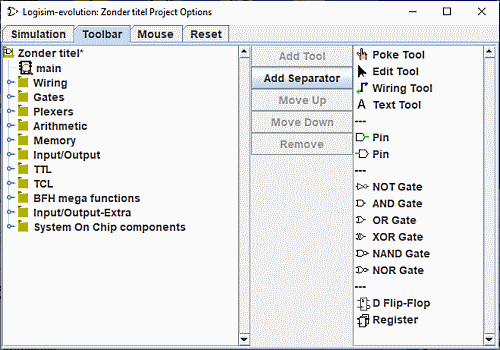

工具栏选项卡
工具栏选项卡用于配置工具栏中显示哪些工具。

左侧是一个资源管理器，列出了所有可用的工具；右侧列表显示工具栏的当前内容。（三个破折号“---”表示一个分隔符，会绘制为一条灰色线。）在资源管理器和列表之间有以下按钮：
-
添加工具将左侧资源管理器中当前选中的工具添加到工具栏的末尾。
-
添加分隔符在工具栏末尾添加一个分隔符。
-
上移将工具栏中当前选中的项目向上/向左移动一个位置。
-
下移将工具栏中当前选中的项目向下/向右移动一个位置。
-
删除从工具栏中删除当前选中的项目。
与工具关联的属性不会在此窗口中显示；这些属性可在主绘图窗口中查看和编辑。
下一节： 鼠标选项卡。